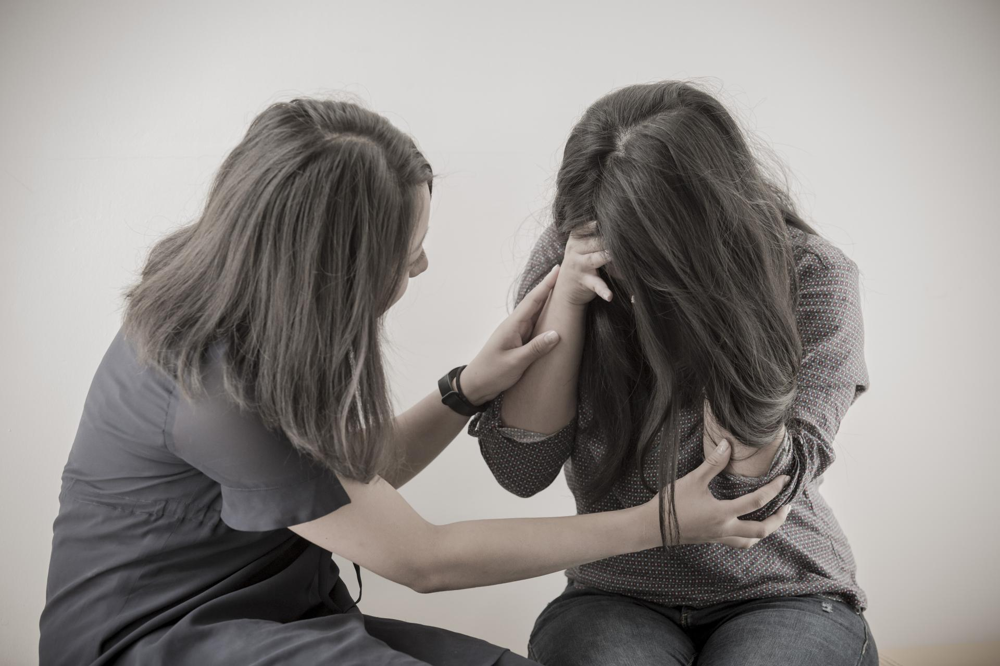
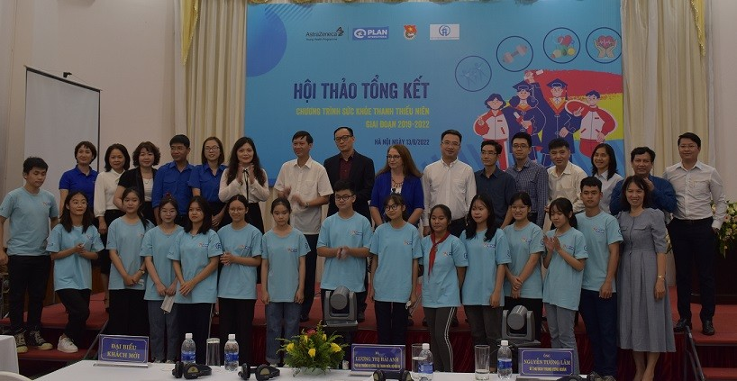
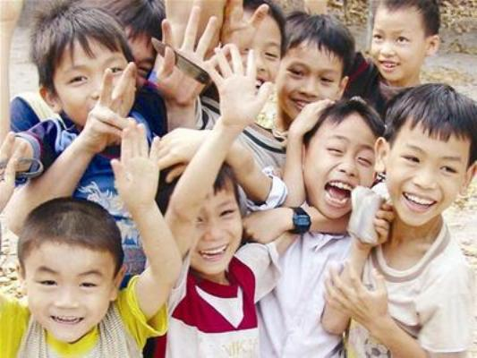

TIN TỨC

Chương trình Sức khỏe thanh thiếu niên Việt Nam tạo nên tác động đáng kể...
Tiếp cận trực tiếp hơn 49.300 thanh thiếu niên để trang bị kiến thức phòng chống bệnh không lây nhiễm trong hơn ba năm. Nội dung phòng chống bệnh không lây nhiễm được lồng ghép vào Chiến lược phát triển thanh niên Việt Nam 2021 - 2030.
Ghi nhận cho các trường đóng góp tích cực cho Chương trình Sức khỏe Thanh thiếu niên...
Chương trình Sức khỏe Thanh thiếu niên là một sáng kiến toàn cầu nhằm đầu tư cho cộng đồng của AstraZeneca, tập trung vào đối tượng thanh thiếu niên, giúp họ phòng chống các bệnh không lây nhiễm phổ biến nhất: ung thư, tiểu đường, bệnh tim mạch, bệnh phổi mãn tính và các rối loạn sức khỏe tâm thần

Báo cáo Nghiên cứu về Sức khỏe tâm thần và tâm lý xã hội...
Nghiên cứu về ‘Sức khỏe tâm thần và tâm lý xã hội của trẻ em và thanh thiếu niên tại một số tỉnh và thành phố ở Việt Nam’ do Viện Nghiên cứu và Phát triển (ODI) tiến hành và hỗ trợ kỹ thuật là một trong những hoạt động thuộc khuôn khổ chương trình hợp tác giữa UNICEF Việt Nam và Bộ Lao động, Thương binh và Xã hội (Bộ LĐTBXH). Nghiên cứu này nhằm mục đích cung cấp một cái nhìn tổng quan về tình hình sức khỏe tâm thần và tâm lý xã hội của trẻ em và thanh thiếu niên ở Việt Nam

Tác động tích cực từ Chương trình Sức khỏe thanh thiếu niên Việt Nam...
"Chương trình Sức khỏe Thanh thiếu niên Việt Nam hỗ trợ thanh niên nâng cao nhận thức và kiến thức về cách phòng chống các bệnh không lây nhiễm như chế độ dinh dưỡng lành mạnh, tăng cường hoạt động thể lực, giảm sử dụng rượu bia, thuốc lá, góp phần loại bỏ ô nhiễm không khí để đảm bảo các em có một khởi đầu tốt nhất trong cuộc sống tương lai"

Dinh dưỡng hợp lý cho lứa tuổi học đường
Theo nhu cầu dinh dưỡng khuyến nghị cho người Việt Nam đã được Bộ Y tế phê duyệt, với trẻ em tiểu học từ 6 - 11 tuổi năng lượng khuyến nghị như sau: Trẻ nam 6-7 tuổi cần 1.570 Kcal/trẻ/ngày, ở độ tuổi 8-9 là 1.820 và 2.150 với trẻ 9-11 tuổi. Tương tự, nhu cầu dinh dưỡng với trẻ nữ ở 3 nhóm tuổi trên là 1.460, 1.730 và 1.980 (Kcal/trẻ/ngày)
Bữa ăn đảm bảo dinh dưỡng
Bên cạnh cải thiện dinh dưỡng, Trường MN Sơn Ca còn được hỗ trợ phát triển thể lực như hỗ trợ dụng cụ phát triển thể lực như các bộ dụng cụ hít xà đơn, chạy dích dắc, đo thể lực, cùng một số dụng cụ khác như vòng thể dục, bóng bàn, bóng ném, xốp lót sàn
Dự án “Sức khỏe và dinh dưỡng học đường” tại Hải Phòng Hình thành thói quen tốt cho học sinh tiểu học
Dự án “ Sức khỏe và dinh dưỡng học đường” do Tổ chức Cứu trợ Trẻ em Quốc tế phối hợp Sở Giáo dục- Đào tạo (GD-ĐT) thành phố triển khai tại Hải Phòng từ năm 2013. Sau 5 năm thực hiện, dự án nâng tổng số trường được hưởng lợi lên 29 trường; đồng thời đạt một số kết quả bước đầu

Hội nghị triển khai dự án “Sức khỏe và Dinh dưỡng học đường năm 2020”
Trong giai đoạn 1/10/2018 đến 30/11/2019, Sở Giáo dục và Đào tạo phối hợp với SCI triển khai Dự án “Sức khỏe và Dinh dưỡng học đường” cho 29 trường mầm non, tiểu học và THCS trên địa bàn thành phố. Chương trình tổ chức thành công 16 lớp tập huấn về sức khỏe và dinh dưỡng học đường, 4 lớp tập huấn về chính sách an toàn cho trẻ em
Nên cho con học trường công hay trường tư?
Liệt kê các thứ tự ưu tiên trong vấn đề chọn lựa trường học cho con, chị Nguyễn Thị Thu Hiền (Hải Phòng) và chị Nguyễn Thị Thu Hương (Hà Nội) đều nhất trí rằng, quan trọng nhất là chi phí hợp lý, tiếp đến là môi trường học tập thân thiện, sau đó là phương pháp giáo dục phù hợp và cuối cùng là thuận tiện cho việc đưa đón
Thầy giáo trẻ rời quê, bỏ công ty thủy sản lập nghiệp trường nghề
Rời quê hương Bà Rịa - Vũng Tàu về miền Tây lập nghiệp, thầy giáo trẻ Tô Hoài Thanh đã có chỗ đứng ở trường nghề hơn chục năm qua.
Thầy Tô Hoài Thanh (35 tuổi, hiện là Phó trưởng Khoa Điện - Điện tử) là một trong những giảng viên trẻ của trường Cao đẳng Nghề Sóc Trăng
Người thầy đặc biệt của nhiều thí sinh từng giành vòng nguyệt quế Olympia
Thầy Lê Công Long (SN 1982) - giáo viên Trường THPT thị xã Quảng Trị, tỉnh Quảng Trị. Thầy Long sinh ra và lớn lên tại huyện Triệu Sơn, tỉnh Thanh Hóa, sau khi tốt nghiệp Trường Đại học Sư phạm Huế, thầy có cơ duyên đồng hành cùng các thế hệ học sinh trên "đất lửa" Quảng Trị
Thủ khoa Gen Z bỏ nghiệp diễn, theo đuổi ước mơ nhà giáo
"Giáo sư ở Học viện Hý Kịch từng khuyên tôi theo đuổi con đường sư phạm vì thấy tôi hợp. Hồi đó, tôi nghĩ rằng tôi sẽ giảng dạy ở bậc đại học hoặc diễn xuất cho người trưởng thành. Cơ duyên đưa đẩy, tôi chuyển sang làm giáo viên của bộ môn Nghệ thuật trình diễn cho học sinh phổ thông từ 4 tới lớp 11"

Công tác bảo vệ trẻ em - một số định hướng trong thời gian tới
Trong những năm qua, công tác chăm sóc, giáo dục và bảo vệ trẻ em luôn được Đảng, Nhà nước và toàn xã hội quan tâm, được coi là một trong những chính sách ưu tiên hàng đầu để bảo đảm an sinh xã hội, vì mục tiêu phát triển ổn định và lâu dài của đất nước
Việt Nam vẫn có khoảng trên 1,5 triệu trẻ em có hoàn cảnh đặc biệt và trên 2 triệu trẻ em có nguy cơ rơi vào hoàn cảnh đặc biệt
Truyền thông được thể hiện qua 3 kênh chính là truyền thông trên phương tiện thông tin đại chúng, truyền thông trên các trang mạng xã hội và truyền thông cộng đồng. Thông qua công tác truyền thông, nhận thức của các cấp, các ngành, đội ngũ cán bộ làm công tác bảo vệ trẻ em, gia đình và toàn xã hội về trẻ em và tầm quan trọng thực hiện quyền trẻ em được nâng cao
Triển khai hiệu quả các biện pháp bảo vệ trẻ em
Thông báo kết luận nêu rõ, công tác chăm sóc và bảo vệ trẻ em luôn được Đảng, Nhà nước chỉ đạo và có sự phối hợp trong triển khai thực hiện của tất cả các bộ, ngành, địa phương nhằm tạo ra môi trường sống an toàn lành mạnh cho trẻ em, điều kiện tốt nhất để trẻ em thực hiện 4 nhóm quyền cơ bản của mình đó là quyền được sống, quyền được bảo vệ, quyền được phát triển và quyền được tham gia
Quy định của pháp luật quốc tế và pháp luật Việt Nam - Hành lang pháp lý bảo vệ trẻ em trước tình trạng bị xâm hại
Trẻ em là hạnh phúc của gia đình, là tương lai của đất nước! “Mọi trẻ em đều được bảo vệ để giảm nguy cơ rơi vào hoàn cảnh đặc biệt, chú trọng bảo vệ trẻ em để không bị xâm hại; trẻ em có hoàn cảnh đặc biệt được trợ giúp, chăm sóc để phục hồi, hòa nhập cộng đồng và có cơ hội phát triển.”Đây là một trong những mục tiêu quan trọng, là mối quan tâm đặc biệt của Đảng, Nhà nước ta, của toàn xã hội và của mỗi gia đình
Hướng nghiệp cho học sinh lớp 12- Hướng đến tương lai
Bước qua kỳ 2 của năm lớp 12 các em phải đổi mặt với rất nhiều kỳ thi quan trong và bên cạnh đó phải tim câu trả lời cho những câu hỏi như: nên theo học ngành gì hay nghề nào? Sau này mình sẽ làm gì?Những câu hỏi này luôn là các bài toán thật sự nan giải lấy đi không ít thời gian công sức để tìm đáp án từ năm này qua năm khác. Đó không chỉ là cơn đau đầu với các bạn học sinh mà còn là nỗi lo của các bậc phụ huynh. Trước tình hình đó vài trò của việc định hướng đường đi ngay từ đầu ngày càng nâng cao và ảnh hưởng không nhỏ tới tương lai của các em
Xu hướng chọn nghề của học sinh hiện nay như thế nào?
Lựa chọn nghề nghiệp hiện nay đang là một trong những vấn đề được nhiều người quan tâm nhất là học sinh, sinh viên. Việc lựa chọn nghề nghiệp ai cũng phải đắn đo suy nghĩ, vậy làm cách nào để chọn đúng nghề nghiệp, xu hướng chọn nghề của học sinh hiện nay như thế nào? Cùng tìm lời giải đáp trong bài viết này nhé!
Lựa chọn đúng nghề nghiệp phù hợp sẽ mở ra tương lai tươi sáng
Trong giai đoạn tìm hiểu nghề nghiệp các em cần phải thật sáng suốt để cân nhắc các tác động xung quanh trong vấn đề lựa chọn nghề nghiệp cho mình. Chọn đúng nghề sẽ mở ra tương lai tươi sáng, chọn sai đường sẽ mất cơ hội và mất đi tương lai
Khối A08 gồm những ngành nào? Trường nào đào tạo khối A8?
Chỉ còn chưa đầy 2 tháng nữa, kỳ thi THPT Quốc gia sẽ diễn ra, với những thí sinh lựa chọn khối thi A08 chắc hẳn sẽ có nhiều băn khoăn về ngành học khối A08 và các trường khối A08. Hãy tìm hiểu những thông tin về khối A08 kỹ càng trong bài viết để có những lựa chọn đúng đắn cho mình khi biết điểm thi ĐH
Thúc đẩy sự tham gia của trẻ em trong hoạch định chính sách liên quan
Sáng 16/3 tại Hà Nội, Trung tâm Nghiên cứu Quản lý và Phát triển bền vững (MSD) phối hợp cùng Trung tâm Nghiên cứu Truyền thông Phát triển (RED) tổ chức Hội thảo “Sự tham gia của trẻ em trong xây dựng – hoạch định chính sách liên quan đến trẻ em”. Sự kiện có sự tham dự của các đại diện đến từ Cục bảo trợ trẻ em, các Bộ ban ngành liên quan, các tổ chức xã hội và các cơ quan truyền thông
Cơ hội công bằng cho mọi trẻ em
Ngày 6/7, tại Hà Nội Văn phòng đại diện UNICEF tại Việt Nam, Bộ Lao động - Thương binh và xã hội và Ủy ban Văn hóa - Giáo dục thanh niên, thiếu niên và nhi đồng Quốc hội đã phối hợp tổ chức Lễ công bố báo cáo Tình hình Trẻ em Thế giới 2016: Cơ hội công bằng cho mọi trẻ em.
Việt Nam phát biểu tại phiên thảo luận về Trẻ em trong Xung đột Vũ trang
Phát biểu khai mạc, Tổng thư ký Liên hợp quốc Ban Ki Moon nhận định bối cảnh an ninh toàn cầu đang thay đổi nhanh chóng song trẻ em vẫn là nạn nhân phải trả giá đắt nhất cho chiến tranh, xung đột và phải đối mặt với những vi phạm nhân quyền nghiêm trọng nhất như giết chóc, thương tật, tù đầy, tra tấn, bỏ đói, bắt cóc, bắt lính. Tổng thư ký bày tỏ quan ngại sâu sắc về thực tế hơn một nửa số người tị nạn
Quyền tham gia của trẻ em vào quá trình ra quyết định như thế nào?
Quyền tham gia của trẻ em vào quá trình ra quyết định Các quyền được tham gia của trẻ em là một nhóm quyền cần được nghiên cứu sâu sắc hơn, nâng cao nhận thức, bổ sung kiến thức để các quyền cụ thể trong nhóm quyền này được thực hiện trong thực tiễn cuộc sống